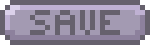
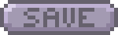

Conclusie
[Conclusie moet nog geschreven worden]
 

Score per Seconde: 0
[Conclusie moet nog geschreven worden]
We hebben voornamelijk aan 1 project gewerkt tijdens de stage, namelijk de EmailWijzer voor het BZK. Met dit project hebben we gebruik gemaakt van alle werkprocessen.


Dit is waarvoor we gekozen zijn bij deze stage en het is iets wat ik zelf ook graag wil, aangezien mijn originele project heel erg gehaast was.
Dit is het programma waar we applicaties mee moeten gaan maken bij deze stage, dus ik wil graag op een redelijk tempo het leren.
Ik kan niet altijd goed werken met mensen die maar wat doen of mensen die constant irrelevante dingen bespreken tijdens het werken. Ik wil graag met iets meer geduld hier op kunnen reageren
Het BZK is vooral geen ICT bedrijf, maar wij werken wel met het WEM team en dit team maakt applicaties voor het rijk. Ze hebben dus ook voornamelijk klanten binnen de rijksoverheid.
Binnenlandse Zaken over het algemeen maakt heel veel verschillende soorten producten, teveel om op te noemen. Maar het WEM team specifiek maakt voornamelijk alleen websites en applicaties.
Mijn BPV begeleider werkt voor het BZK Transparant, een team dat als doel heeft om de archivering te verbeteren en de informatieopenbaring makelijker en beter te maken. Met haar werken we samen om deze applicatie te maken voor het helpen bij de emailarchiveren, aan onze kant de applicatie en vanuit haar de specificaties en inhoud.
Onze rol is dan ook om met haar te werken aan dit project.
Ik ben voor deze stage gekozen aan de hand van een project dat we voor het Ministerie van Binnenlandse Zaken hebben gedaan in de derde periode van het eerste schooljaar. Hier hadden we een project gemaakt waarmee ze emails of documenten mee konden archiveren. Ze wouden hierna twee studenten uitnodigen om te gaan werken als stagaires om het project verder uit te werken, en ik ben een van de twee gekozen studenten.
Mijn doel voor deze stage is voornamlijk om meer te leren over het bedrijfsleven. Hiernaast wil ik ook leren hoe we dit project kunnen uitwerken tot een daadwerkelijke applicatie die ook gebruikt en ingezet gaat worden. Bovendien leren we ook een heel nieuw programma om websites of applicatie te maken, WEM, een no-code platform die vaker voor applicaties wordt gebruikt bij het BZK.
Mijn werkzamheden aan het begin waren voornamelijk het leren van WEM en alvast rommelen met hoe we het project konden realiseren. Hierna werden de werkzaamheden een aantal demo’s maken in de template van de rijksoverheid en we begonnen ook meer meetings te krijgen om de specificaties uit te werken voor de uiteindelijk applicatie.